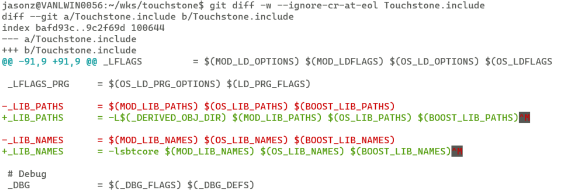
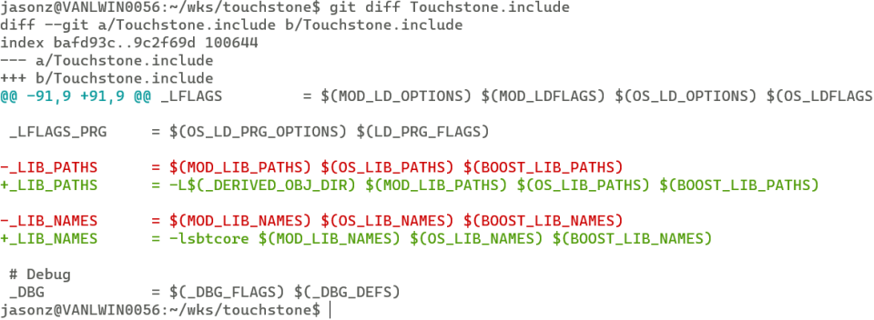

It is nasty to see ^M at end of each line, especially when they are in color. 
Here is the solution.
$ git config --global core.whitespace cr-at-eol
-w or --ignore-cr-at-eol if you just don’t want let them visible and don’t care the difference.
